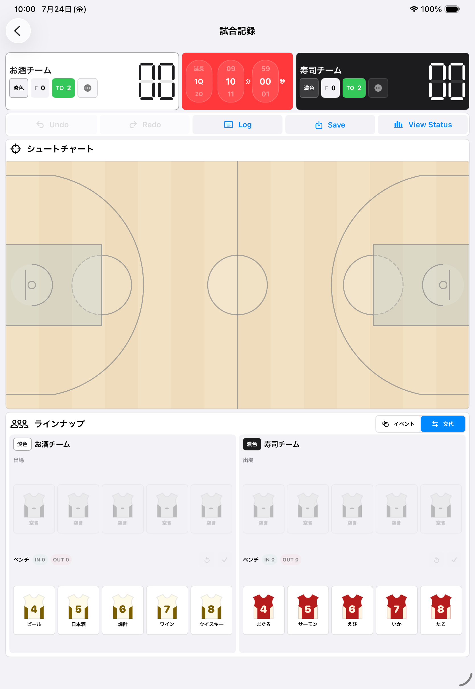
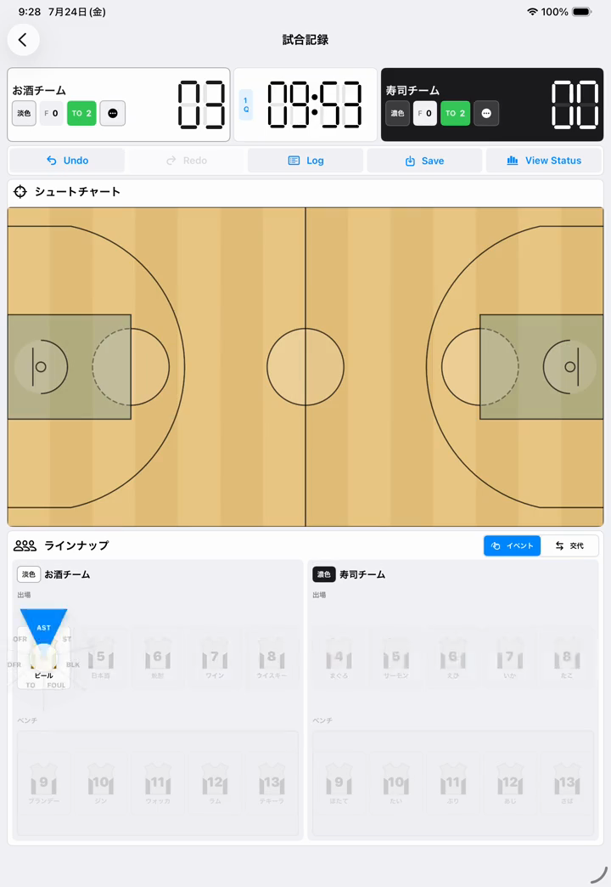
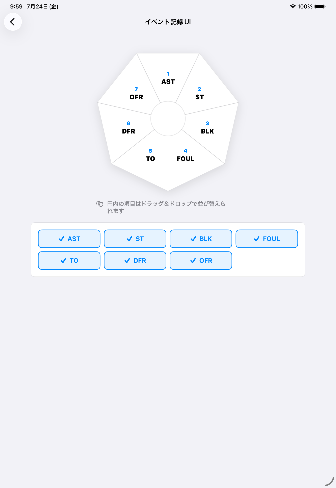

試合中に迷ったとき
Writerの
詳しい操作方法
タップ、長押し、スワイプ、ドラッグを使う操作を、実際の画面と一緒に説明します。 初めての試合前に、タイマーとイベント入力だけでも確認しておくと安心です。
1. 基本ジェスチャー
Writerでは、同じ場所でもジェスチャーによって動作が変わります。
| 操作 | 主な用途 | ポイント |
|---|---|---|
| タップ | タイマー開始・停止、モード選択、選手選択 | ボタンまたはカードを短く1回押します。 |
| 長押し | タイマーの時刻・クオーター編集 | タイマー停止中に約0.4秒押し続けます。 |
| スワイプ | 成功・失敗、ASTなどのイベント入力 | 目的の表示が選択色になってから指を離します。 |
| ドラッグ＆ドロップ | イベント配置の入れ替え | 設定画面の円内で、項目を別の項目へ重ねます。 |
ASTなどの選手イベントの方向は設定で変更できます。試合中に表示される円形メニューを見て、対象イベントの方向へスワイプしてください。
2. タイマーを使う・時間を直す
開始・停止
- 両チームに少なくとも1人ずつ出場選手を設定します。
- 中央のタイマーをタップすると開始します。
- もう一度タップすると停止します。
タイマーを開始すると、ラインナップ欄はイベント入力モードへ切り替わります。
時刻・クオーターを編集
- タイマーが動いている場合は、タップして停止します。
- 赤いタイマー表示を約0.4秒長押しします。
- 左から「クオーター」「分」「秒」の数字を上下にスワイプして合わせます。
- タイマー表示をタップして編集を確定します。
{kind=link}

3. シュートを記録する
2P・3P
- タイマーを開始し、コート上のシュート位置をタップします。
- 表示された背番号からシュートした選手を探します。「?」は選手不明です。
- 成功は背番号を上、失敗は下へスワイプして離します。
2P／3Pはタップしたコート位置から自動判定され、成功時はスコアにも反映されます。
フリースロー
- タイマーが動いている状態で、左右どちらかのフリースローサークルを約0.4秒長押しします。
- FTの選手選択が表示されたら対象選手を探し、成功は上、失敗は下へスワイプします。
通常のタップではFT入力になりません。選手選択が表示されるまで、フリースローサークルから指を離さず押し続けてください。
4. ASTなどの選手イベントを記録する
- ラインナップ右上で「イベント」が選択されていることを確認します。
- 出場選手のカードを任意の方向へ少しスワイプすると、円形のイベント候補が表示されます。
- 記録したいイベントの方向へ指を動かします。
- 対象イベントが青く選択された状態で指を離します。
{kind=link}

5. イベントの種類・配置を変更する
- ホームから「設定」を開きます。
- 「イベント記録UI」を選びます。
- 画面下のAST、STなどをタップして、試合中に表示する項目を選びます。
- 円内のイベント名を長めに押して持ち上げ、入れ替えたい項目へドラッグ＆ドロップします。
円の一番上から時計回りの配置が、試合中のスワイプ方向に対応します。変更はその場で保存され、次のイベント入力から反映されます。
{kind=link}

6. ラインナップと交代
- タイマーを停止します。
- ラインナップ右上で「交代」を選びます。
- ベンチから入れる選手を選ぶと「IN」、出場欄から下げる選手を選ぶと「OUT」に追加されます。
- INとOUTの人数を確認し、チェックマークで一括確定します。
試合開始時は、各チームのベンチから出場する5人を選び、チームごとにチェックマークで確定します。タイマー稼働中は交代できません。
7. 入力を修正・確認する
Logでは削除できるイベントを削除できます。ただし、タイマー調整と交代記録は履歴整合性のため通常イベントと同じ削除対象にはなりません。
8. 操作できないとき
タイマーを開始できません
両チームに少なくとも1人ずつ出場選手が必要です。ラインナップを確定してからタイマーをタップしてください。
タイマー編集画面が出ません
タイマーを停止してから、赤いタイマー表示を約0.4秒長押ししてください。通常のタップでは開始・停止になります。
選手をスワイプしてもイベントが入りません
タイマーが動いていること、ラインナップ欄が「イベント」モードであること、選手が出場欄にいることを確認します。項目が青くなる距離までスワイプしてから離してください。
FTの選手選択が表示されません
タイマーが動いている状態で、左右どちらかのフリースローサークルを約0.4秒長押しします。通常のタップではFT入力になりません。
交代操作ができません
タイマーを停止し、ラインナップ右上の「交代」を選びます。INとOUTを選び、出場欄が0〜5人になる組み合わせでチェックマークを押してください。
入力結果が合っているか不安です
Logでイベントを確認し、View Statusでスコアとbox scoreへの反映を確認します。確定前ならUndoまたはLogから修正できます。